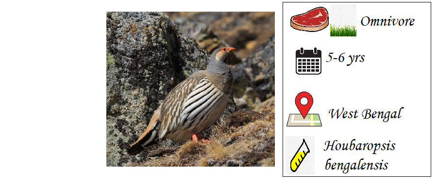

Endangered Birds In India

BENGAL FLORICAN
The Bengal florican is one of the rarest bustard family birds found in the world. In india
it is found in the Ganga and Brahmaputra river basin in India and Nepal.they are regularly
poached despite the efforst to save them and there are only 1000 bengal floricans in the
world .
-----------------------------------------------------------------------------------------------------------------------------------------

WHITE WOOD WINGED DUCK
White-winged ducks are among the world’s most endangered birds and are one of
the biggest species of duck.Its body is black and its head is white thickly
spotted with black, it has conspicuous white patches on its wings and orange
or red eyes.This forest duck is listed as Endangered because it has a very
small and fragmented population which is undergoing a very rapid and continuing
decline as a result of the loss of and disturbance to riverine habitats. They
are also found in arunchal Pradesh and meghalya.
-------------------------------------------------------------------------------------------------------------------------------------------
THE GREAT INDIAN BUSTARD
The great Indian bustard is mainly spotted in the Desert National Park (Rajasthan)
and the Lala-Parjau sanctuary in western Kutch (Gujarat). Habitat it is omnivorous
and feeds on beetles, grasshoppers, seeds and groundnuts. This is one of the largest
Bustard and heaviest flying birds of india.it can weigh up to 15 kgs and one-meter
height or even smaller. They are protected under the wildlife protection act
in 1972. Now there are only 150 individuals left.
--------------------------------------------------------------------------------------------------------------------------------------------
FOREST OWLET
The forest owlet is endemic to the Narmada River Valley region in central India but
recently They mainly feed on small prey animals, such as lizards and also amphibians,
small birds, rodents and large invertebrates like grasshoppers. the forest owlet was
assessed as being endangered, with a population estimated of 250 mature individuals.
-----------------------------------------------------------------------------------------------------------------------------------------